Change License Server
This document is intended to provide instructions for changing from one license server to another and deleting the original.
This is a very simple procedure and can easily be accomplished by individual engineers. Given an existing installation, there is no need to use the original installation CDs, as the setup is installed as part of the original installation.
1. Configure ProENGINEER Batch File
navigate to the \bin folder in the <proe loadpoint> installation directory, which should be something like D:\PTC\wildfire2_M181\bin, as shown below:
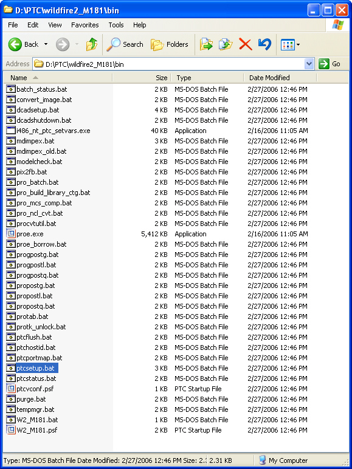
Double-click the ptcsetup.bat file as shown.
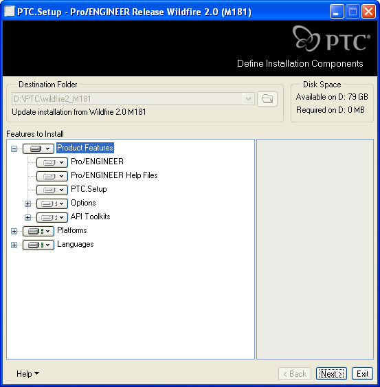
Now you will see the main screen of the License Manager Setup Tool.
Since you configuring an existing installation, no changes are necessary at this level.
Click Next>.
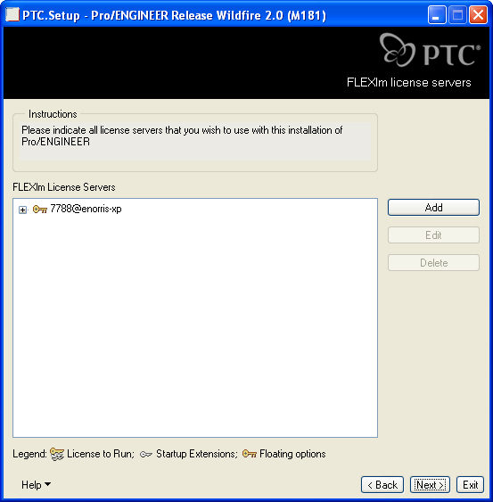
The next screen shows the current license server.
Click Add.
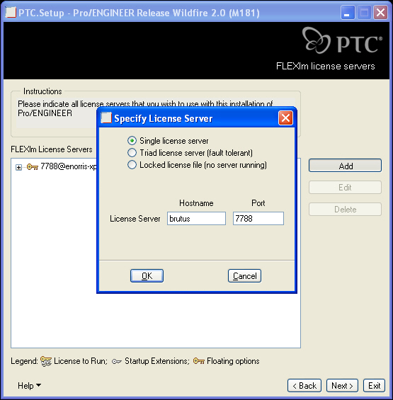
Type "brutus" in the Hostname field.
Click OK.
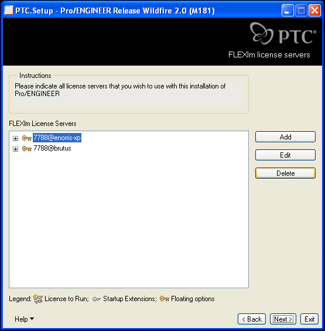
Now that you have added 7788@brutus, you need to delete the old server, 7788@enorris-xp.
Highlight 7788@enorris-xp as shown and click Delete.
Then click Next>.
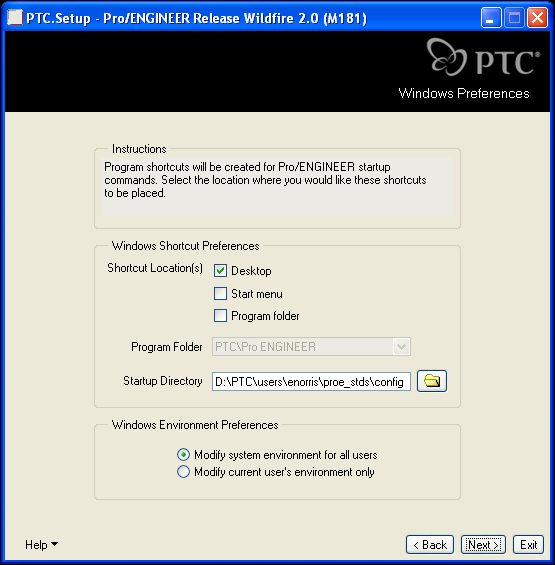
Configure the Startup Directory.
Click Next>.
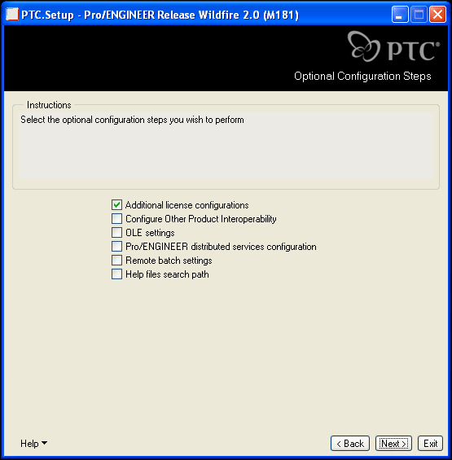
Click Next>.
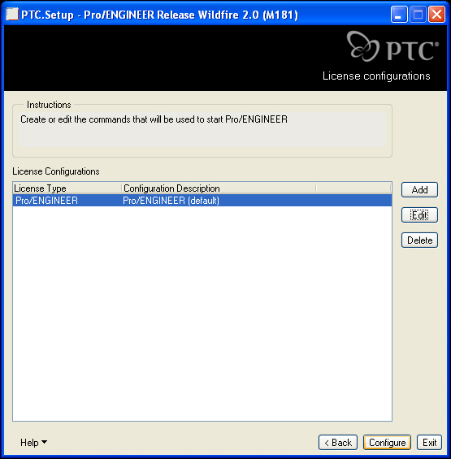
Click Configure.
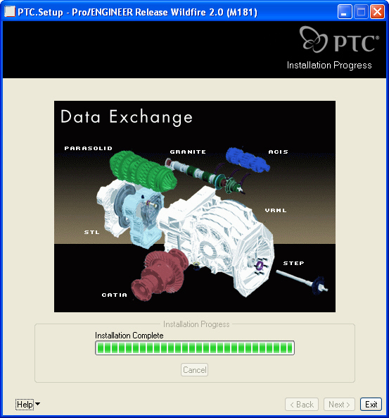
Once the status bar is all green, and the Installation is Complete, it is safe to exit the Setup Tool.
Click Exit.
2. Configure ProINTRALINK Client Batch File
navigate to the \bin folder in the <prointralink client loadpoint> installation directory, which should be something like D:\PTC\proiclient3.4\bin, as shown below:
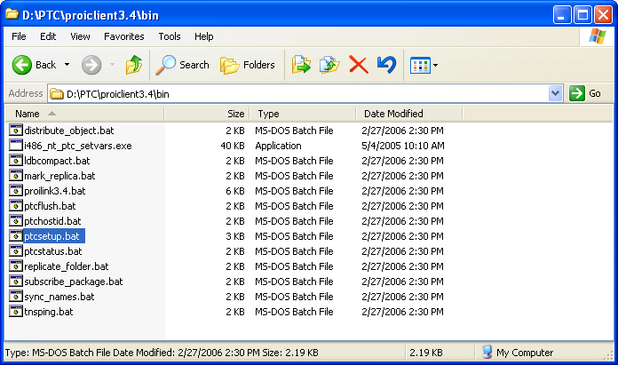
Double-click the ptcsetup.bat file as shown.
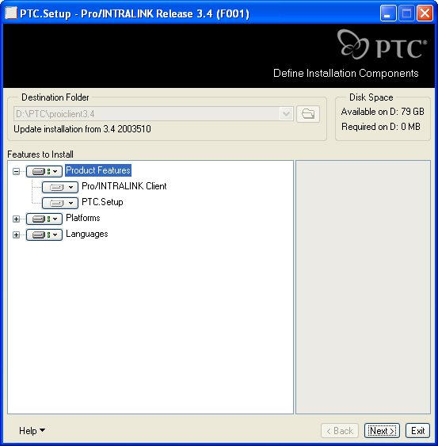
Now you will see the main screen of the License Manager Setup Tool.
Since you configuring an existing installation, no changes are necessary at this level.
Click Next>.
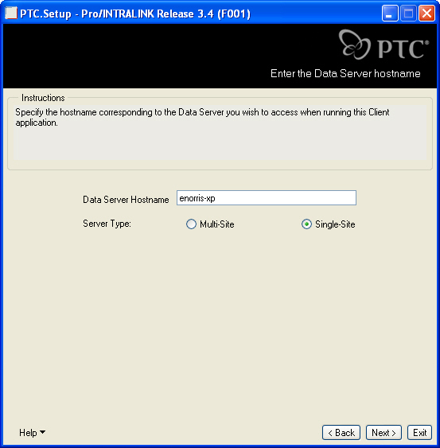
The next screen defines the Data Server Hostname.
Enter "enorris-xp"
Make sure Single-Site is selected.
Click Next>.
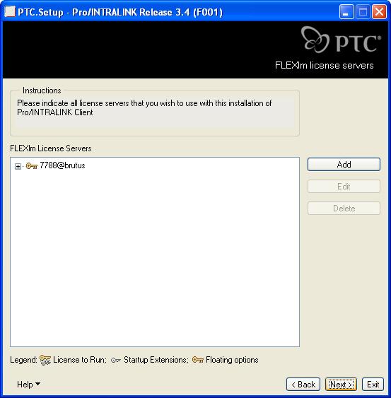
Make sure 7788@brutus is listed as the only License Server. If not, click Add and type brutus in the Hostname field, and click OK.
When the FLEXlm License Servers dialog box lookslike the image on the left, click Next>.
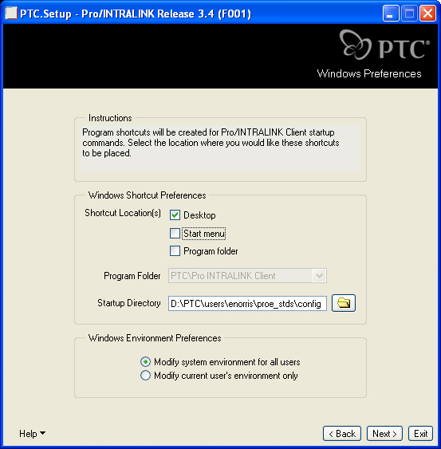
Configure the shortcut parameters and Startup Directory.
Then click Next>.
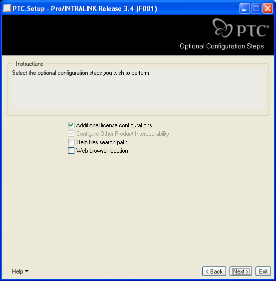
Click Next>.
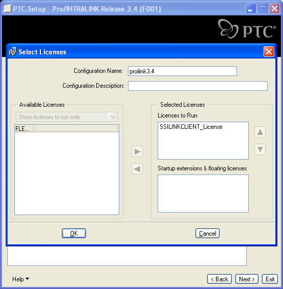
On the next screen click Edit and make sure the Select Licenses dialog box looks like the image on the right. If not, then select the appropriate Available License from the left-hand field and click the blue arrow to move itover to the right, under Licenses to Run.
Click Next>.
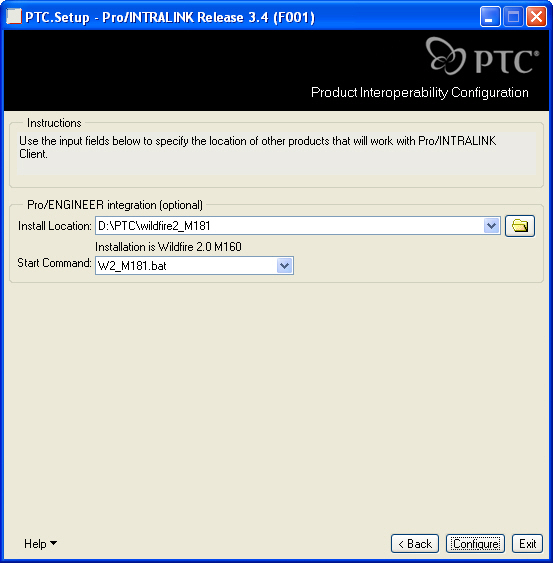
If desired, define the location of the ProENGINEER installation directory.
Click Configure.
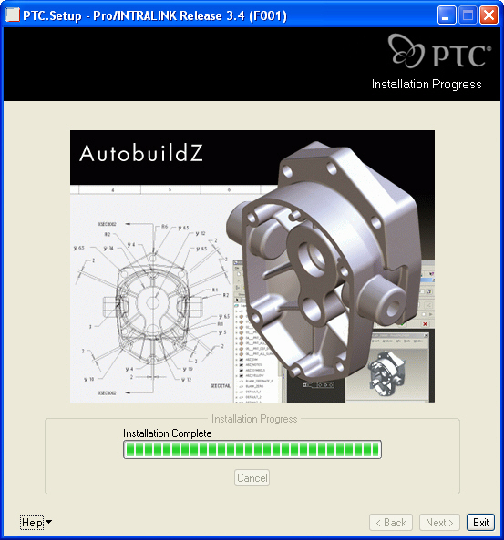
Once the status bar is all green, and the Installation is Complete, it is safe to exit the Setup Tool.
Click Exit.
finished!